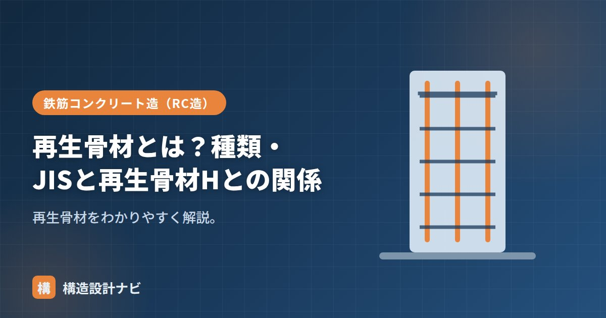

再生骨材とは？種類・JISと再生骨材Hとの関係

再生骨材（さいせいこつざい）とは、解体したコンクリートを破砕・処理して再利用する骨材のことです。建設資材の資源循環（リサイクル）を進めるうえで重要な材料で、資源の有効活用と廃棄物削減の両面に役立ちます。天然骨材の枯渇が進む中、解体建物から出るコンクリート塊を単なる産業廃棄物ではなく、次の建物をつくるための資源として活かす発想がその出発点です。
- 再生骨材は解体コンクリートを破砕・処理して再利用する骨材。
- 付着モルタルの除去度合いで再生骨材H・M・Lの3区分にJIS化されている。
- 再生骨材Hは天然骨材に近い品質で、構造体コンクリートにも使用できる。
意味
建物の解体で出るコンクリート塊（がれき）を破砕し、付着したモルタル分を取り除くなどの処理をして、再び骨材として使えるようにしたものです。天然骨材の節約と建設副産物の再利用に役立ちます。天然の砂利・砂とは異なり、内部に旧コンクリートのモルタル分が残るため、密度が低く吸水率が高くなりやすいという性質があり、品質はこのモルタル分をどれだけ取り除けたかによって大きく変わります。
製造工程
再生骨材は、おおむね次のような工程でつくられます。まず解体現場から搬入されたコンクリート塊を、破砕機（クラッシャー）で粗く砕きます。次に、鉄筋などの異物を磁選機で除去し、ふるい分けで粒度をそろえます。ここまでは比較的低コストな処理ですが、高品質な再生骨材Hをつくるには、さらにすりもみ処理と呼ばれる粒どうしをこすり合わせる工程を加え、表面に付着した古いモルタルを積極的に剥がし取ります。この処理の手間とコストの違いが、そのままH・M・Lという品質区分の違いにつながっています。
種類とJIS（H・M・L）
処理の程度＝品質によって3区分に分かれ、それぞれJIS規格があります。
| 区分 | 品質 | JIS | 主な用途 |
|---|---|---|---|
| 再生骨材H | 高品質（High） | JIS A 5021 | 一般の構造体コンクリートにも使用可 |
| 再生骨材M | 中品質（Middle） | JIS A 5022 | 乾燥収縮の影響が小さい部材など |
| 再生骨材L | 低品質（Low） | JIS A 5023 | 捨てコン・均しコン・裏込めなど |
再生骨材Hとの関係
再生骨材Hは、すりもみ処理などで付着モルタルを十分に取り除いた高品質の再生骨材です。吸水率や密度が天然骨材に近く、普通コンクリートと同等の品質が得られるため、構造体にも使えます。M・Lは品質が下がるぶん、用途が限定されます。
再生骨材は、もとの解体コンクリートに含まれていた材料の影響を受けます。アルカリシリカ反応を起こす骨材が混入していないか、有害な塩化物や不純物が含まれていないかなど、天然骨材以上に品質確認が重要になる点に注意が必要です。
環境面の意義
建設工事から発生するコンクリート塊は、廃棄物として処分すれば処分場の逼迫や環境負荷につながります。再生骨材として利用することで、天然骨材の採取量を減らし、資源の循環利用（3R：リデュース・リユース・リサイクル）に貢献できます。近年は建設リサイクルの取り組みが各方面で進められており、解体現場と生コン工場・骨材プラントが連携して再生骨材を製造・利用する仕組みも広がっています。設計者・施工者にとっても、再生骨材の活用は建物のライフサイクル全体を通じた環境配慮の一環として位置づけられます。
再生骨材Hを構造体に使う計画を見ると、まず現場に届く実際の骨材のロットで試験成績書を確認するようにしています。同じH等級でも製造プラントによって品質のばらつきがあり、図面上の等級表記だけで安心せず、現物の裏付けを取ることが欠かせません。
まとめ
- 再生骨材は解体コンクリートを破砕・処理して再利用する骨材。
- 破砕・異物除去・すりもみ処理などの工程で製造され、処理の程度が品質を左右する。
- 品質でH（A 5021）・M（A 5022）・L（A 5023）に分かれる。
- 再生骨材Hは高品質で構造体にも使える。M・Lは用途が限定される。資源循環にも貢献する。